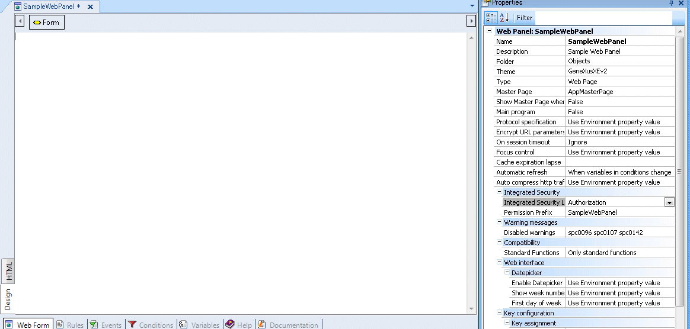
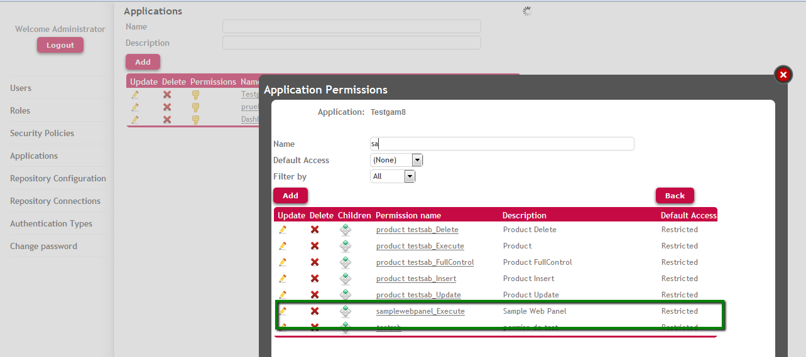

GAM Permissions exist within the scope of GAM Applications and are assigned to GAM - Roles and to GAM Users in the GAM - Repository.
The permission level a user has in runtime depends on the Permission Access Type.
There are some permissions which are Automatic Permissions generated by GeneXus and there are GAM - Permissions Created by the User (X Evolution 3). The first can be checked automatically in runtime, and both can be managed programmatically.
Below we see each of these cases.
The code to check these permissions is included in the generated code, and the user only declares (through Permission Prefix Property) which is the permission which is going to be checked. In fact he doesn't need to program anything, just to declare the permissions required to execute the object.
The permissions which are checked automatically in runtime are the Automatic Permissions generated by GeneXus.
GeneXus generates automatic permissions when the user specifies the following:
An automatic permission is a unit which can be checked automatically by each object, and the generated code incorporates the decision of allowing the user to access this object or forbid the access to it. It's important to mention that this check is done previous to Start Event.
In case of Automatic Permissions GeneXus generates the permissions in F5 and checks in run time (when the object is going to be executed) if the user has the permission or if he has a role where the permissions are not denied.
Each object of the KB (except Dashboard objects) exposes a permission of access.
This permission is named Execution Permission and it´s an automatic permission generated by GeneXus.
The name of this permission is <prefix>_Execute (see Permission Prefix Property for more details).
1. Define a web panel named "SampleWebpanel". Permission Prefix Property is set automatically to "SampleWebpanel" value. In this case the web panel has Integrated Security Level property to set "Use Environment value" which value is "Authorization".

2. After F5 the permission named SampleWebpanel_Execute is generated and available for the web Application of the Kb. The following figure shows the option "Permissions" of the WEB Application in GAM Backend.

After this, only users who have a role where this permission is allowed can execute "SampleWebpanel". The GeneXus user only declared the permissions needed to execute the object, he didn't program it in his code.
When permissions are checked programmatically, the object does not need to have Integrated Security Level set to "Authorization", but "Authentication" value is enough. Besides, Require Access Permissions Application Property has to be set.
The permissions which are checked programmatically can be Automatic Permissions generated by GeneXus or Permissions created by the user.
The way to check permissions in runtime is by executing Checkpermission Method of GAMRepository Object.
GAM - Automatic Permissions generated by GeneXus
Permission Prefix property
GAM - Full Control Permissions and inheritance
Update GAM User Permissions
Get GAM User Permissions
Update GAM Application Permissions